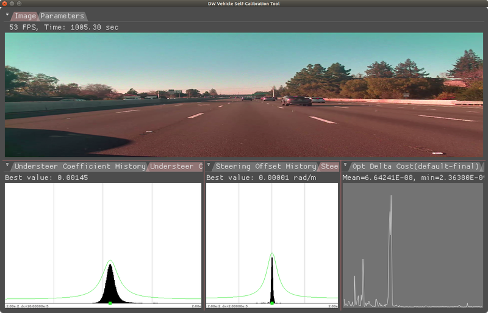
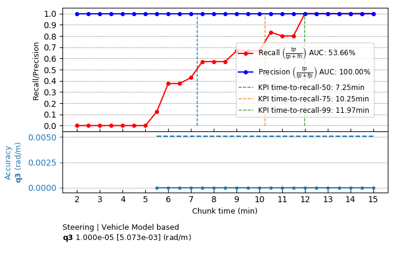

Operating Principle
NVIDIA® DriveWorks uses vehicle model to calibrate the steering system properities using vehicle odometery and vehicle egomotion measurement and predicted vehicle motion based on vehicle model.
Steering Offset
Vehicle self-calibration supports vehicle steering offset self calibration. The steering offset is the difference between the actual steering and the measured steering angle, and it equals to the negative of the measured steering angle when the vehicle drive straight. The steering offset is calibrated by minimizing the predicted turn curvature based on model and curvature computed based on measurement data. To start the calibration process, the vehicle has to drive above 10 meter per seocnd, perform gradual lane change maneuvers.

Normalized steering offset q3 (steering offset / wheelbase) (center histogram), and Understeer coefficient (left histogram)collected over a period of time
Requirements
Initialization Requirements
- Nominal values on vehicle calibration
- steering offset: 0 radian
Runtime Calibration Dependencies
- IMU-based egomotion needs to be based on accurate IMU calibration and odometry properties
Input Requirements
- Assumption: Vehicle performs the aforementioned maneuvers until calibration convergence.
- Vehicle egomotion: requirements can be found in the Egomotion module
- Vehicle IO State: requirements can be found in the VehicleIO VehicleIO
Output Requirements
- Corrected steering offset: less than 0.8 degrees accuracy
Cross-validation KPI
Several hours of data are used to produce a reference calibration value for cross-validation. Then, short periods of data are evaluated for whether they can recover the same values. For example, the graph below shows precision/recall curves of normalized steering offset q3 (q3=steering offset / wheelbase). Precision indicates that an accepted calibration is within a fixed precision threshold from the reference calibration, and recall indicates the ratio of accepted calibrations in the given amount of time.

Workflow
The following code snippet shows the general structure of a program that performs IMU self-calibration
while(true)
{
}
DW_API_PUBLIC dwStatus dwVehicleIO_getVehicleActuationFeedback(dwVehicleIOActuationFeedback *const actuationFeedback, dwVehicleIOHandle_t const obj)
Retrieve current vehicle actuation feedback.
DW_API_PUBLIC dwStatus dwVehicleIO_getVehicleNonSafetyState(dwVehicleIONonSafetyState *const nonSafeState, dwVehicleIOHandle_t const obj)
Retrieve current vehicle non-safety state.
DW_API_PUBLIC dwStatus dwCalibrationEngine_getCalibrationStatus(dwCalibrationStatus *status, dwCalibrationRoutineHandle_t routine, dwCalibrationEngineHandle_t engine)
Returns the current status of a calibration routine.
DW_API_PUBLIC dwStatus dwCalibrationEngine_addVehicleIOActuationFeedback(dwVehicleIOActuationFeedback const *vioActuationFeedback, uint32_t sensorIndex, dwCalibrationEngineHandle_t engine)
Adds dwVehicleIOActuationFeedback to calibration engine.
DW_API_PUBLIC dwStatus dwCalibrationEngine_initialize(dwCalibrationEngineHandle_t *engine, dwRigHandle_t rig, dwContextHandle_t context)
Creates and initializes a Calibration Engine.
DW_API_PUBLIC dwStatus dwCalibrationEngine_addVehicleIONonSafetyState(dwVehicleIONonSafetyState const *vioNonSafetyState, uint32_t sensorIndex, dwCalibrationEngineHandle_t engine)
Adds dwVehicleIONonSafetyState to calibration engine.
DW_API_PUBLIC dwStatus dwCalibrationEngine_startCalibration(dwCalibrationRoutineHandle_t routine, dwCalibrationEngineHandle_t engine)
Starts a calibration routine associated with a calibration engine.
DW_API_PUBLIC dwStatus dwCalibrationEngine_initializeVehicle(dwCalibrationRoutineHandle_t *routine, uint32_t sensorIndex, const dwCalibrationVehicleParams *params, dwEgomotionConstHandle_t egoMotion, const dwVehicle *vehicle, dwCalibrationEngineHandle_t engine)
Initialize vehicle parameter calibration.
DW_API_PUBLIC dwStatus dwCalibrationEngine_stopCalibration(dwCalibrationRoutineHandle_t routine, dwCalibrationEngineHandle_t engine)
Stops a calibration routine associated with a calibration engine.
DW_API_PUBLIC dwStatus dwCalibrationEngine_getVehicleSteeringProperties(dwVehicleSteeringProperties *steering, dwCalibrationRoutineHandle_t routine, dwCalibrationEngineHandle_t engine)
Get vehicle parameter calibration result.
This workflow is demonstrated in the following sample: Steering Calibration Sample